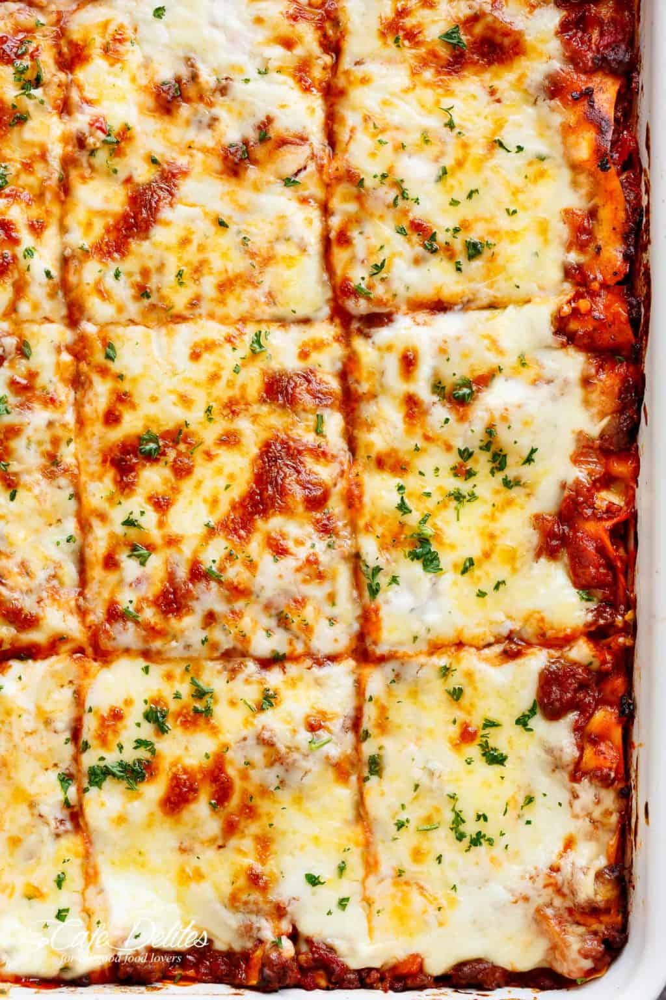

A classic recipe of one of the most loved foods in the world. The ultimate comfort food = homemade lasagna. Family and friends gather around the dinner table at any time for this lasagna recipe. A big warm comforting hug within layers of pasta, tomato sauce, white sauce and melted cheese!

Ingredients
- Butter
- Flour
- Milk
- Parmesan cheese
Method
- Heat oil in a large pot over medium heat, then add in the onion and carrots and cook for 8-10 minutes, or until softened. Add in the garlic and sauté for about 1 minute, until fragrant.
- Add beef and pork (if using) and cook while breaking it up with the end of your spoon, until browned.
- Pour in the Passata, crushed tomatoes, tomato paste, crushed bouillon and dried herbs. Mix well to combine and bring to a gentle simmer. Season with desired amount of salt and pepper (I use about 3/4 teaspoon each) and sugar if needed. Cover and cook for about 20-30 minutes, occasionally mixing, until the sauce has thickened slightly and meat is tender.
- Adjust salt, pepper and dried herbs to your taste.